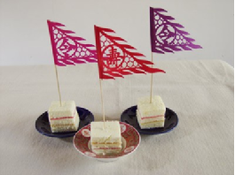

赶在十月最后一天发一篇水文...
每年X新生的国际学生中会有一些人来到Cherbourg的Ecole des Fourriers学习四个月的法语. 这四个月的时间也许是X四年里最轻松的一段时间了吧......
今年有19名学生来Cherbourg, 历史最多. 我们每两周要自己出一份法语刊物, 算是促进写作水平吧, 基本上没啥人看...... 我们这年把杂志取名"MelangeXChange", 取各国文化交汇之意...
第一期的杂志封面是这样的...

把我和QY写的关于中秋和重阳的文章放上来吧, 很水......
Les Fêtes Chinoises en Automne
La fête de la lune
Origins
La fête de la lune procède du mythe de Chang’e(嫦娥). Chang’e est la femme de HouYi (后羿), un héros qui est très fort. HouYi obtient un élixir de longue vie de dieu. Un jour, ’un étudiant de HouYi qui voulait voler cet elixir à Chang’e quand HouYi n’était pas chez lui, pour protéger cet élixir, Chang’e prend cet elixir. Et puis elle s'exile sur la lune. On croit qu’elle habite désormais dans la lune, et donc on célébre une fête le 15 août du calendrier lunaire, car cette jour, la pleine lune est la plus ronde et la plus lumineuse de l’année,
Les festivité
Aujourd’hui, la fête de la lune est une de ces fêtes traditionnel les plus important en Chine et dans les des pays de l’est de l’Asie. La lune très ronde représente la reunion de la famille. Pendant la fête de la lune, on se rassemble à la maison pour célèbrer la fête avec les familles. En Chine, on a des vacances pour cette fête.
La fête de la lune est une fête de réunion , donc il y a beaucoup de poèmes sur ce thème. Quelques poèmes sont eextrêmement connus par les Chinois.
Quand la famille se réunit , on regarde la lune ronde et on prépare des gâteaux de lune. <
La fête du Chongyang
La fête du Chongyang a lieu le neuvième jour du neuvième mois dans le calendrier lunaire(le 23 octobre 2012 dans le calendrier grégorien). Il y a deux 9 et le 9 est un chiffre ‘yang’(solaire et positif) donc particulièrement vénéré dans la tradition chinoise. C’est pourquoi on l’appelle ‘Chongyang’(Double-Yang) ou ‘Chongjiu’(Double-Neuf).
L’ origine
La fête du Chongyang est une fête très importante pour les chinois, mais l’origine de la fête est obscure. Il y a une légende qui raconte que les habitants d’un village attrapaient une maladie et que beaucoup de personnes mouraient. Un jour, un jeune est parti consulter les sages pour trouver le remède contre la maladie. Après son retour au village, il a demandé aux villageois de monter au sommet d'une montagne, afin de collecter des plantes médicinales et boire du vin de chrysanthème. Les gens se sont rétablis peu après les soins. Donc le jeune a été considéré comme un héros.
Les festivités
Pendant la fête du Chongyang, il y a des activités diverses, comme l’ alpinisme, la dégustation du vin de chrysanthème et l’admiration des fleurs. Ces activités célèbrent la légende. D'ailleurs, on mange le gâteau de Chongyang, un dessert très sucré et délicieux. Le respect des vieillards a été attribué aujourd’hui à la fête de Chongyang, parce que le chiffre neuf, homonyme du mot ‘longtemps’ en chinois, est un symbole de longévité. Les jeunes profitent de l’occasion pour faire une excursion avec des vieillards ou leur préparer des plats savoureux.

Recette de Gâteau de Lune
(http://www.marmiton.org) Temps de préparation : 240 minutes Temps de cuisson : 70 minutes
Ingrédients (10 Portions) :
Pour la pâte : - 300 g de farine - 750 g de pâte de graine de lotus - 10 jaunes d'oeuf salés - 7 petite cuillère d'huile d'arachide - 1 petite cuillère de thé - 1/2 petite cuillère de levure de boulanger - 100 g de sucre Pour la décoration : - 2 jaunes d'oeuf - 1 petite cuillère de sucre - 2 petites cuillères d’eau
Préparation :
- Mélangez le thé avec la levure.
- Enveloppez les jaunes d’oeuf salé dans un papier d’aluminium huilé.
- Faites les cuire au four pendant 20 minutes (90°)
- Coupez le pain de farine de graine de lotus en 10, faites un creux au centre de chaque bloc et, placez-y un jaune d’oeuf salé.
- Roulez-les pour en faire une boule.
- Tamisez la farine et mélangez avec le thé et l’huile.
- Laissez reposer la pâte sous une serviette mouillée pendant 4 heures. Coupez en 10.
- Enveloppez chaque boule avec la pâte et mettez-la dans un moule à gâteau de lune.
- Aplatissez bien, puis retirez du moule et, placez les gâteaux sur un plateau huilé.
- Faites cuire au four à 200ºC pendant 15 minutes.
- Puis enlevez les gâteaux et arrosez-les d’eau.
- Faites cuire encore à 180ºC pendant 5 minutes.
- Sortez et brossez les gâteaux avec l’oeuf battu, le sucre et l’eau.
- Faites cuire encore 10 minutes jusqu’à ce que les gâteaux prennent une belle couleur dorée.
Disqus 留言